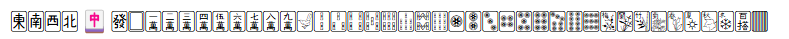

Unicodeの1F000～1F02Fの範囲に麻雀牌があるので以下のように利用できる。 花牌はともかく、百塔牌は見慣れない気がします。オールマイティー牌らしいです。
端末により以下の画像のように🀄だけ表示がおかしくなっていることがある。結構一般的に起こる現象です。 例えばWindows環境では他の牌はSegoe UI Symbolのなかで🀄だけSegoe UI Emojiになっているようです。 調べると、麻雀そのものを示す絵文字として🀄が使われたためといった話はでてきます。
しかも、Firefoxでは単純にfontfamilyにSegoe UI Symbolを指定しても勝手にSegoe UI Emojiにしてきたりして言うことを聞きません。 これ自体は@font-faceでunicodeの範囲指定をすると解決しました。 こちらのcssで LocalFontMahjongTileとして指定しているものになります。これでもかなりマシになると思います。 MacPCやiPhoneは私が持っていないのでわかりませんが、使っているWindowsのEdge,Chrome,Firefox、AndroidのChromeではうまく表示されていました。 以下の通りです。
ただ、webフォントを読み込んでしまったほうが確実といえます。 先ほどのcssにあるとおりGL-MahjongTileを利用しました。 これについての説明はこちらです。 指定すると以下のようになる。
このままでは小さいのでサイズを大きくした指定も用意しました。